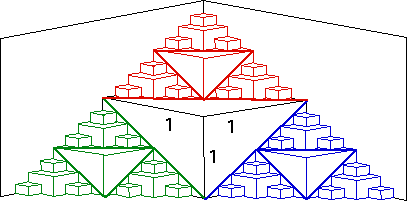

2. First approach In the limiting shape, the bottom, left and right sides become straight lines.
So also the bottom, left and right sides of each piece.
Consequently, in the limiting shape the cube of side length 1 contributes three triangles of base and altitude 1 to the surface.
|  |
After accounting for these triangles, the remaining three parts of the
of the surface - left, right,
and top - each contain three triangles of base and
altitude
Continuing in this pattern, we see the surface is made of triangles:
| step | altitude (= base) | number of triangles | area/triangle |
| 1 | 1 | 3 | 1/2 |
| 2 | 1/2 | 9 = 32 | 1/8 = 1/23 |
| 3 | 1/4 | 27 = 33 | 1/32 = 1/25 |
| 4 | 1/8 | 81 = 34 | 1/128 = 1/27 |
| ... | |||
| n | 1/2n-1 | 3n | 1/22n-1 |
Consequently, the area of the surface is
The series in parentheses is a geometric series with ratio 3/4, hence converging to
Second approach After accouting for the three triangles of base and altitude 1, the
remainder of the surface consists of three pieces - left,
right, and top - each a copy of the
whole surface reduced by a factor of
Denote by x the area of the whole surface. Then the three smaller pieces each have
area
Solving for x gives
Caution This calculation works only if x is finite. For example, if the surface bent and folded so much that it was more than 2-dimensional, x would be infinite. The displayed equation is valid for x infinite. Before solving any such equaton, we must be careful to establish that the solution is finite.
Return to PaperFolding Lab.